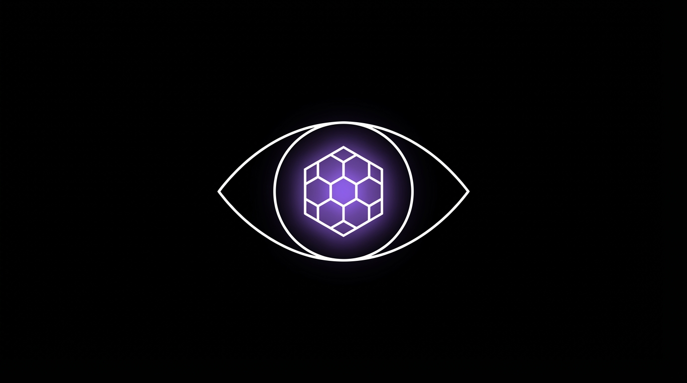

<!DOCTYPE html>
<html lang="en">
<head>
  <meta charset="UTF-8">
  <meta name="viewport" content="width=device-width, initial-scale=1.0">
  <title>The Blind Spot Effect</title>
  <script src="https://cdn.tailwindcss.com"></script>
  <script src="https://unpkg.com/react@18/umd/react.production.min.js"></script>
  <script src="https://unpkg.com/react-dom@18/umd/react-dom.production.min.js"></script>
  <script src="https://unpkg.com/@babel/standalone/babel.min.js"></script>
  <script src="https://unpkg.com/framer-motion@10.16.4/dist/framer-motion.js"></script>
  <link href="https://fonts.googleapis.com/css2?family=Inter:wght@400;500;600;700;800&display=swap" rel="stylesheet">
  <script>
    tailwind.config = {
      theme: {
        extend: {
          colors: {
            accent: '#8b5cf6',
            dark: '#0a0a0a',
          }
        }
      }
    }
  </script>
  <style>
    * { font-family: 'Inter', -apple-system, BlinkMacSystemFont, sans-serif; }
    body { background: #FFFFFF; color: #111827; }
    .lesson-container { max-width: 720px; margin: 0 auto; }
    .glow-accent { box-shadow: 0 0 60px rgba(139, 92, 246, 0.3); }
  </style>
</head>
<body>
  <div id="root"></div>

  <script type="text/babel">
    const { motion, useInView, AnimatePresence } = window.Motion;
    const { useState, useRef, useEffect } = React;

    const smoothEase = [0.25, 0.1, 0.25, 1];

    // SVG Icons
    const Icons = {
      eye: (
        <svg className="w-6 h-6" fill="none" stroke="currentColor" viewBox="0 0 24 24" strokeWidth="1.5">
          <path strokeLinecap="round" strokeLinejoin="round" d="M2.036 12.322a1.012 1.012 0 010-.639C3.423 7.51 7.36 4.5 12 4.5c4.638 0 8.573 3.007 9.963 7.178.07.207.07.431 0 .639C20.577 16.49 16.64 19.5 12 19.5c-4.638 0-8.573-3.007-9.963-7.178z"/>
          <path strokeLinecap="round" strokeLinejoin="round" d="M15 12a3 3 0 11-6 0 3 3 0 016 0z"/>
        </svg>
      ),
      brain: (
        <svg className="w-6 h-6" fill="none" stroke="currentColor" viewBox="0 0 24 24" strokeWidth="1.5">
          <path strokeLinecap="round" strokeLinejoin="round" d="M12 5a3 3 0 1 0-5.997.125 4 4 0 0 0-2.526 5.77 4 4 0 0 0 .556 6.588A4 4 0 1 0 12 18Z"/>
          <path strokeLinecap="round" strokeLinejoin="round" d="M12 5a3 3 0 1 1 5.997.125 4 4 0 0 1 2.526 5.77 4 4 0 0 1-.556 6.588A4 4 0 1 1 12 18Z"/>
          <path strokeLinecap="round" strokeLinejoin="round" d="M12 5v13"/>
        </svg>
      ),
      spark: (
        <svg className="w-6 h-6" fill="none" stroke="currentColor" viewBox="0 0 24 24" strokeWidth="1.5">
          <path strokeLinecap="round" strokeLinejoin="round" d="M9.813 15.904L9 18.75l-.813-2.846a4.5 4.5 0 00-3.09-3.09L2.25 12l2.846-.813a4.5 4.5 0 003.09-3.09L9 5.25l.813 2.846a4.5 4.5 0 003.09 3.09L15.75 12l-2.846.813a4.5 4.5 0 00-3.09 3.09zM18.259 8.715L18 9.75l-.259-1.035a3.375 3.375 0 00-2.455-2.456L14.25 6l1.036-.259a3.375 3.375 0 002.455-2.456L18 2.25l.259 1.035a3.375 3.375 0 002.456 2.456L21.75 6l-1.035.259a3.375 3.375 0 00-2.456 2.456zM16.894 20.567L16.5 21.75l-.394-1.183a2.25 2.25 0 00-1.423-1.423L13.5 18.75l1.183-.394a2.25 2.25 0 001.423-1.423l.394-1.183.394 1.183a2.25 2.25 0 001.423 1.423l1.183.394-1.183.394a2.25 2.25 0 00-1.423 1.423z"/>
        </svg>
      ),
      star: (
        <svg className="w-6 h-6" fill="none" stroke="currentColor" viewBox="0 0 24 24" strokeWidth="1.5">
          <path strokeLinecap="round" strokeLinejoin="round" d="M11.48 3.499a.562.562 0 011.04 0l2.125 5.111a.563.563 0 00.475.345l5.518.442c.499.04.701.663.321.988l-4.204 3.602a.563.563 0 00-.182.557l1.285 5.385a.562.562 0 01-.84.61l-4.725-2.885a.563.563 0 00-.586 0L6.982 20.54a.562.562 0 01-.84-.61l1.285-5.386a.562.562 0 00-.182-.557l-4.204-3.602a.563.563 0 01.321-.988l5.518-.442a.563.563 0 00.475-.345L11.48 3.5z"/>
        </svg>
      ),
      anchor: (
        <svg className="w-6 h-6" fill="none" stroke="currentColor" viewBox="0 0 24 24" strokeWidth="1.5">
          <path strokeLinecap="round" strokeLinejoin="round" d="M12 21a9.004 9.004 0 008.716-6.747M12 21a9.004 9.004 0 01-8.716-6.747M12 21V3m0 0a3 3 0 110 6 3 3 0 010-6zM3.284 14.253A9.004 9.004 0 0112 6a9.004 9.004 0 018.716 8.253"/>
        </svg>
      ),
      shield: (
        <svg className="w-6 h-6" fill="none" stroke="currentColor" viewBox="0 0 24 24" strokeWidth="1.5">
          <path strokeLinecap="round" strokeLinejoin="round" d="M12 9v3.75m0-10.036A11.959 11.959 0 013.598 6 11.99 11.99 0 003 9.75c0 5.592 3.824 10.29 9 11.622 5.176-1.332 9-6.03 9-11.622 0-1.31-.21-2.57-.598-3.75h-.152c-3.196 0-6.1-1.249-8.25-3.286zm0 13.036h.008v.008H12v-.008z"/>
        </svg>
      ),
      users: (
        <svg className="w-6 h-6" fill="none" stroke="currentColor" viewBox="0 0 24 24" strokeWidth="1.5">
          <path strokeLinecap="round" strokeLinejoin="round" d="M15 19.128a9.38 9.38 0 002.625.372 9.337 9.337 0 004.121-.952 4.125 4.125 0 00-7.533-2.493M15 19.128v-.003c0-1.113-.285-2.16-.786-3.07M15 19.128v.106A12.318 12.318 0 018.624 21c-2.331 0-4.512-.645-6.374-1.766l-.001-.109a6.375 6.375 0 0111.964-3.07M12 6.375a3.375 3.375 0 11-6.75 0 3.375 3.375 0 016.75 0zm8.25 2.25a2.625 2.625 0 11-5.25 0 2.625 2.625 0 015.25 0z"/>
        </svg>
      ),
      check: (
        <svg className="w-5 h-5" fill="none" stroke="currentColor" viewBox="0 0 24 24" strokeWidth="2">
          <path strokeLinecap="round" strokeLinejoin="round" d="M4.5 12.75l6 6 9-13.5"/>
        </svg>
      ),
      x: (
        <svg className="w-5 h-5" fill="none" stroke="currentColor" viewBox="0 0 24 24" strokeWidth="2">
          <path strokeLinecap="round" strokeLinejoin="round" d="M6 18L18 6M6 6l12 12"/>
        </svg>
      ),
      chevronDown: (
        <svg className="w-5 h-5" fill="none" stroke="currentColor" viewBox="0 0 24 24" strokeWidth="2">
          <path strokeLinecap="round" strokeLinejoin="round" d="M19 9l-7 7-7-7"/>
        </svg>
      )
    };

    // Animation Components
    function FadeUp({ children, delay = 0, className = "" }) {
      const ref = useRef(null);
      const isInView = useInView(ref, { once: true, margin: "-50px" });
      return (
        <motion.div ref={ref} className={className}
          initial={{ opacity: 0, y: 30 }}
          animate={isInView ? { opacity: 1, y: 0 } : {}}
          transition={{ duration: 0.6, delay, ease: smoothEase }}>
          {children}
        </motion.div>
      );
    }

    // Blind Spot Eye Visualization
    function BlindSpotEye() {
      const ref = useRef(null);
      const isInView = useInView(ref, { once: true });
      const [showBlindSpot, setShowBlindSpot] = useState(false);

      useEffect(() => {
        if (isInView) {
          setTimeout(() => setShowBlindSpot(true), 1000);
        }
      }, [isInView]);

      return (
        <div ref={ref} className="bg-neutral-900 rounded-2xl p-8 relative overflow-hidden">
          <motion.svg
            className="w-full h-64"
            viewBox="0 0 400 200"
            initial={{ opacity: 0 }}
            animate={isInView ? { opacity: 1 } : {}}
          >
            <ellipse cx="200" cy="100" rx="150" ry="80" fill="none" stroke="#374151" strokeWidth="3" />
            <circle cx="200" cy="100" r="50" fill="#1e3a5f" />
            <motion.circle
              cx="200" cy="100" r="25"
              fill="#0a0a0a"
              animate={{ r: [25, 30, 25] }}
              transition={{ repeat: Infinity, duration: 3 }}
            />
            <circle cx="185" cy="85" r="10" fill="white" fillOpacity="0.3" />
            <AnimatePresence>
              {showBlindSpot && (
                <motion.g
                  initial={{ opacity: 0, scale: 0 }}
                  animate={{ opacity: 1, scale: 1 }}
                  transition={{ type: "spring", duration: 0.5 }}
                >
                  <circle cx="320" cy="100" r="20" fill="#8b5cf6" fillOpacity="0.3" />
                  <line x1="310" y1="90" x2="330" y2="110" stroke="#8b5cf6" strokeWidth="4" />
                  <line x1="330" y1="90" x2="310" y2="110" stroke="#8b5cf6" strokeWidth="4" />
                </motion.g>
              )}
            </AnimatePresence>
            <text x="200" y="180" textAnchor="middle" fill="#9ca3af" fontSize="12">The Eye</text>
            {showBlindSpot && (
              <motion.text
                x="320" y="140"
                textAnchor="middle"
                fill="#8b5cf6"
                fontSize="11"
                fontWeight="bold"
                initial={{ opacity: 0 }}
                animate={{ opacity: 1 }}
              >
                Blind Spot
              </motion.text>
            )}
          </motion.svg>
          <motion.p
            className="text-center text-neutral-400 text-sm mt-4"
            initial={{ opacity: 0 }}
            animate={showBlindSpot ? { opacity: 1 } : {}}
            transition={{ delay: 0.5 }}
          >
            The brain fills in what it cannot see - automatically, invisibly, without you ever knowing.
          </motion.p>
        </div>
      );
    }

    // Cognitive Bias Cards
    function CognitiveBiasCards() {
      const ref = useRef(null);
      const isInView = useInView(ref, { once: true });
      const [activeBias, setActiveBias] = useState(null);

      const biases = [
        {
          name: 'Halo Effect',
          icon: Icons.star,
          color: 'text-amber-500',
          desc: 'First impressions color everything. One good trait makes people assume all traits are good. This is why design matters so much.',
          example: 'Apple products look premium, so people assume the technology inside is premium too. Beautiful design creates automatic credibility.'
        },
        {
          name: 'Anchoring',
          icon: Icons.anchor,
          color: 'text-blue-500',
          desc: 'The first number you see becomes the reference point for all future judgments. This is pricing psychology 101.',
          example: 'Show a $1,000 price first, and suddenly $497 feels like a steal. The anchor changes perception of value completely.'
        },
        {
          name: 'Loss Aversion',
          icon: Icons.shield,
          color: 'text-red-500',
          desc: 'People feel losses 2x more intensely than equivalent gains. FOMO isn\'t just a buzzword - it\'s real neuroscience.',
          example: '"Don\'t miss out" works because the pain of missing out is felt twice as strongly as the pleasure of gaining something.'
        },
        {
          name: 'Bandwagon Effect',
          icon: Icons.users,
          color: 'text-purple-500',
          desc: 'We do what others do. Social proof isn\'t just nice to have - it\'s neurologically irresistible. The crowd signals safety.',
          example: '"10,000+ customers" triggers automatic trust because if so many people made this choice, it must be the right one.'
        },
      ];

      return (
        <div ref={ref} className="space-y-3">
          {biases.map((bias, i) => (
            <motion.div
              key={i}
              className={`bg-neutral-50 rounded-xl overflow-hidden cursor-pointer transition-all ${activeBias === i ? 'ring-2 ring-accent shadow-lg' : 'hover:bg-neutral-100'}`}
              onClick={() => setActiveBias(activeBias === i ? null : i)}
              initial={{ opacity: 0, y: 20 }}
              animate={isInView ? { opacity: 1, y: 0 } : {}}
              transition={{ delay: i * 0.1 }}
            >
              <div className="p-5">
                <div className="flex items-center gap-3">
                  <div className={`${bias.color}`}>{bias.icon}</div>
                  <div className="flex-1">
                    <div className="font-bold text-neutral-900">{bias.name}</div>
                    <div className="text-sm text-neutral-500 leading-relaxed">{bias.desc}</div>
                  </div>
                  <motion.div
                    className="text-neutral-400"
                    animate={{ rotate: activeBias === i ? 180 : 0 }}
                  >
                    {Icons.chevronDown}
                  </motion.div>
                </div>
              </div>
              <AnimatePresence>
                {activeBias === i && (
                  <motion.div
                    className="bg-accent/5 p-5 border-t border-accent/10"
                    initial={{ height: 0, opacity: 0 }}
                    animate={{ height: 'auto', opacity: 1 }}
                    exit={{ height: 0, opacity: 0 }}
                  >
                    <p className="text-sm text-neutral-600 leading-relaxed">
                      <span className="font-semibold text-accent">In Action:</span> {bias.example}
                    </p>
                  </motion.div>
                )}
              </AnimatePresence>
            </motion.div>
          ))}
        </div>
      );
    }

    // Science Stack
    function ScienceStack() {
      const ref = useRef(null);
      const isInView = useInView(ref, { once: true });

      const layers = [
        { label: 'Conscious Awareness', percent: 5, color: '#6b7280' },
        { label: 'Subconscious Processing', percent: 95, color: '#8b5cf6' },
      ];

      return (
        <div ref={ref} className="space-y-4">
          {layers.map((layer, i) => (
            <motion.div
              key={i}
              className="bg-neutral-50 rounded-xl p-5"
              initial={{ opacity: 0, x: -20 }}
              animate={isInView ? { opacity: 1, x: 0 } : {}}
              transition={{ delay: i * 0.2 }}
            >
              <div className="flex justify-between items-center mb-3">
                <span className="font-medium text-neutral-700">{layer.label}</span>
                <span className="text-2xl font-bold" style={{ color: layer.color }}>{layer.percent}%</span>
              </div>
              <div className="h-3 bg-neutral-200 rounded-full overflow-hidden">
                <motion.div
                  className="h-full rounded-full"
                  style={{ backgroundColor: layer.color }}
                  initial={{ width: 0 }}
                  animate={isInView ? { width: `${layer.percent}%` } : {}}
                  transition={{ delay: 0.5 + i * 0.2, duration: 1 }}
                />
              </div>
            </motion.div>
          ))}
          <p className="text-sm text-neutral-500 text-center mt-4">
            95% of decision-making happens below conscious awareness. Your copy must speak to both levels.
          </p>
        </div>
      );
    }

    // Ethical Reframe
    function EthicalReframe() {
      const ref = useRef(null);
      const isInView = useInView(ref, { once: true });

      return (
        <div ref={ref} className="grid md:grid-cols-2 gap-4">
          <motion.div
            className="bg-neutral-100 border border-neutral-200 rounded-xl p-6"
            initial={{ opacity: 0, x: -20 }}
            animate={isInView ? { opacity: 1, x: 0 } : {}}
          >
            <div className="flex items-center gap-2 mb-3">
              <div className="text-neutral-500">{Icons.x}</div>
              <div className="text-xs uppercase tracking-widest text-neutral-500">Not This</div>
            </div>
            <p className="text-neutral-700 font-medium">"I'm manipulating people's psychology against them"</p>
          </motion.div>

          <motion.div
            className="bg-neutral-950 border border-neutral-800 rounded-xl p-6"
            initial={{ opacity: 0, x: 20 }}
            animate={isInView ? { opacity: 1, x: 0 } : {}}
            transition={{ delay: 0.2 }}
          >
            <div className="flex items-center gap-2 mb-3">
              <div className="text-white">{Icons.check}</div>
              <div className="text-xs uppercase tracking-widest text-neutral-400">Think This</div>
            </div>
            <p className="text-neutral-200 font-medium">"I'm communicating in the language the brain actually understands"</p>
          </motion.div>
        </div>
      );
    }

    function Lesson() {
      return (
        <div className="min-h-screen bg-white">
          {/* Hero - Dark */}
          <header className="bg-dark text-white px-6 py-16 relative overflow-hidden">
            <div className="absolute inset-0 bg-gradient-to-br from-accent/20 via-transparent to-transparent" />
            <div className="lesson-container relative">
              <FadeUp>
                <span className="inline-flex items-center gap-2 px-4 py-2 bg-white/10 backdrop-blur-sm text-white/90 text-xs font-semibold rounded-full mb-6 border border-white/10">
                  {Icons.brain}
                  COGNITIVE PSYCHOLOGY
                </span>
                <h1 className="text-4xl md:text-5xl font-extrabold mb-4 leading-tight">
                  The Blind Spot Effect
                </h1>
                <p className="text-xl text-neutral-400 max-w-lg">
                  Why the most powerful persuasion is the persuasion you never see coming.
                </p>
              </FadeUp>

              {/* Lesson Illustration */}
              <FadeUp>
                <div className="my-8">
                  
                </div>
              </FadeUp>
            </div>
          </header>

          {/* Section 1 - White: Introduction */}
          <section className="px-6 py-16 bg-white">
            <div className="lesson-container space-y-8">
              <FadeUp>
                <p className="text-lg text-neutral-700 leading-relaxed">
                  Your brain has a blind spot. <strong>Literally.</strong> There's a place in your eye where the optic nerve connects, and your brain simply fills in what it "thinks" should be there. You never notice it. It works automatically, invisibly, perfectly.
                </p>
                <p className="text-lg text-neutral-600 leading-relaxed mt-4">
                  Your brain works the same way with decisions. There are shortcuts - cognitive biases - operating constantly beneath your awareness. These mental shortcuts evolved over millions of years to help humans make fast decisions. Today, they're the invisible levers of human behavior.
                </p>
                <p className="text-lg text-neutral-600 leading-relaxed mt-4">
                  Understanding these biases isn't manipulation. It's speaking the language the brain is wired to understand. When you align your message with how the brain actually works, your copy stops feeling like marketing and starts feeling like truth.
                </p>
              </FadeUp>
            </div>
          </section>

          {/* Section 2 - Dark: Eye Visualization */}
          <section className="px-6 py-16 bg-dark text-white">
            <div className="lesson-container space-y-8">
              <FadeUp>
                <h2 className="text-3xl font-bold mb-2">The Physical Blind Spot</h2>
                <p className="text-neutral-400 max-w-2xl">
                  Watch as the blind spot appears. Your brain has been hiding this from you your entire life.
                </p>
              </FadeUp>

              <FadeUp delay={0.1}>
                <BlindSpotEye />
              </FadeUp>
            </div>
          </section>

          {/* Section 3 - White: The Science */}
          <section className="px-6 py-16 bg-white">
            <div className="lesson-container space-y-8">
              <FadeUp>
                <h2 className="text-3xl font-bold text-neutral-900 mb-2">The Hidden Decision Engine</h2>
                <p className="text-neutral-600">
                  Here's what neuroscience reveals: the vast majority of your brain's processing happens outside your awareness. You think you're making rational choices, but the real decisions happen before conscious thought even begins.
                </p>
              </FadeUp>

              <FadeUp delay={0.1}>
                <ScienceStack />
              </FadeUp>
            </div>
          </section>

          {/* Section 4 - Dark: Cognitive Biases */}
          <section className="px-6 py-16 bg-dark text-white">
            <div className="lesson-container space-y-8">
              <FadeUp>
                <h2 className="text-3xl font-bold mb-2">The 4 Master Shortcuts</h2>
                <p className="text-neutral-400 max-w-2xl">
                  These mental shortcuts evolved to help us survive. Today, they're the invisible levers of human behavior. Click each to see how they work in marketing.
                </p>
              </FadeUp>
            </div>
          </section>

          {/* Section 5 - White: Bias Cards */}
          <section className="px-6 py-16 bg-white">
            <div className="lesson-container">
              <CognitiveBiasCards />
            </div>
          </section>

          {/* Section 6 - Dark: Ethical Reframe */}
          <section className="px-6 py-16 bg-dark text-white">
            <div className="lesson-container space-y-8">
              <FadeUp>
                <h2 className="text-3xl font-bold mb-2">The Ethical Reframe</h2>
                <p className="text-neutral-400 max-w-2xl">
                  Some people worry: "Isn't this manipulation?" Here's the paradigm shift that changes everything.
                </p>
              </FadeUp>

              <FadeUp delay={0.1}>
                <EthicalReframe />
              </FadeUp>
            </div>
          </section>

          {/* Section 7 - White: Holy Shit Moment */}
          <section className="px-6 py-16 bg-white">
            <div className="lesson-container">
              <FadeUp>
                <div className="bg-gradient-to-br from-accent to-purple-600 rounded-3xl p-8 md:p-12 text-white glow-accent">
                  <div className="flex items-center gap-3 mb-6">
                    <div className="w-12 h-12 bg-white/20 rounded-xl flex items-center justify-center">
                      {Icons.spark}
                    </div>
                    <span className="text-sm font-semibold uppercase tracking-wider text-white/80">Key Insight</span>
                  </div>
                  <p className="text-2xl md:text-3xl font-bold leading-tight mb-6">
                    These principles are so powerful, they work even when you know someone is using them on you.
                  </p>
                  <p className="text-white/80 text-lg leading-relaxed">
                    That's how deeply wired these patterns are. You can know exactly what's happening and still feel the pull. This isn't about manipulation - it's about speaking the native language of the human brain.
                  </p>
                </div>
              </FadeUp>
            </div>
          </section>

          {/* Section 8 - Dark: Key Takeaways */}
          <section className="px-6 py-16 bg-dark text-white">
            <div className="lesson-container">
              <FadeUp>
                <h2 className="text-sm uppercase tracking-widest text-neutral-500 mb-8">Key Takeaways</h2>
                <div className="space-y-3">
                  {[
                    "95% of decisions happen subconsciously - speak to that level",
                    "Cognitive biases aren't bugs - they're features of the brain",
                    "The Halo Effect: first impressions color everything",
                    "Anchoring: the first number sets the reference point",
                    "Loss Aversion: losses feel 2x stronger than gains",
                    "Social Proof: the crowd signals safety and correctness"
                  ].map((takeaway, i) => (
                    <motion.div
                      key={i}
                      initial={{ opacity: 0, x: -20 }}
                      whileInView={{ opacity: 1, x: 0 }}
                      viewport={{ once: true }}
                      transition={{ delay: i * 0.05 }}
                      className="flex items-start gap-3 p-4 bg-neutral-900 rounded-xl border border-neutral-800"
                    >
                      <div className="text-accent mt-0.5">{Icons.check}</div>
                      <span className="text-neutral-200">{takeaway}</span>
                    </motion.div>
                  ))}
                </div>
              </FadeUp>
            </div>
          </section>

          {/* Footer */}
          <footer className="px-6 py-8 border-t border-neutral-100 bg-white">
            <div className="lesson-container flex justify-between items-center text-sm text-neutral-400">
              <span>Quantum Scale</span>
              <span>Cognitive Psychology</span>
            </div>
          </footer>
        </div>
      );
    }

    ReactDOM.render(<Lesson />, document.getElementById('root'));
  </script>
</body>
</html>
